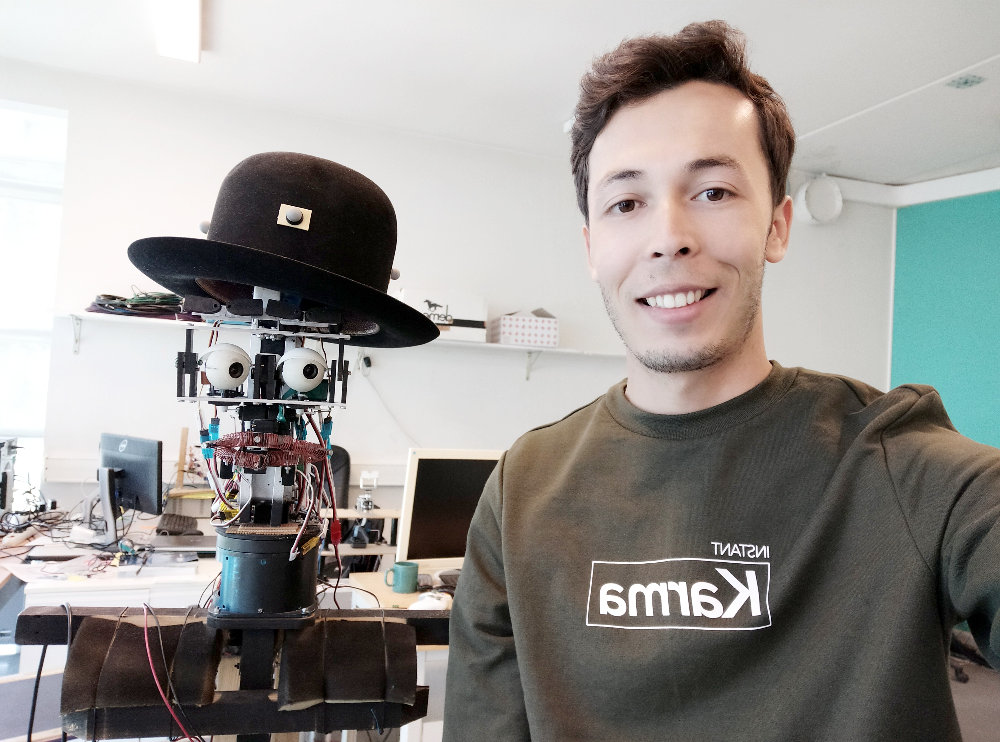
Associate Professor (Maître de Conférences) · Université Paris 8 · LIASD Laboratory
I am an Associate Professor (Maître de Conférences) at Université Paris 8, conducting my research within the LIASD Laboratory. Previously, I was a Postdoctoral Researcher at the CRIStAL Lab and Lille Neurosciences & Cognition / Inserm, where I contributed to the CALYPSO project, which aims to identify objective biomarkers for the detection of psychiatric disorders using AI. I hold a PhD in Computer Engineering, Automatic Control, and Signal/Image Processing from the University of Lorraine (LCOMS Lab), supervised by Prof. Choubeila Maaoui and in collaboration with Dr. Frédéric Bousefsaf.
I am always open to research collaborations and interdisciplinary projects. If you are interested in collaborating, feel free to get in touch.
Current students
Alumni
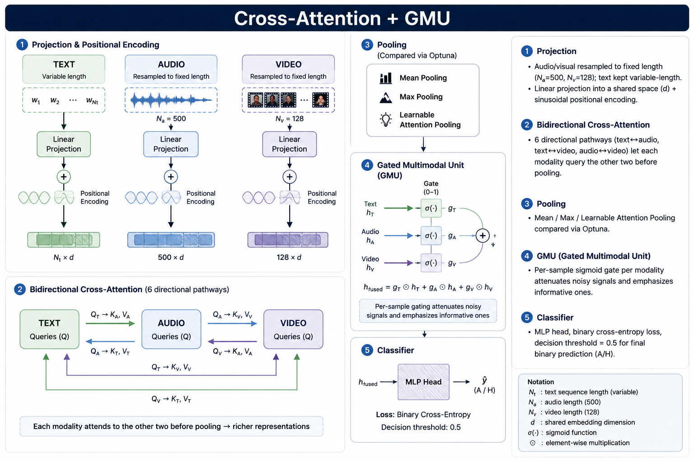
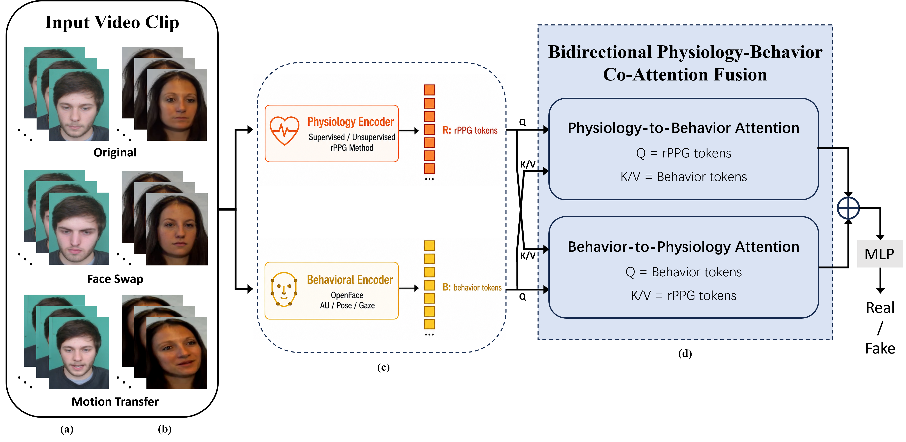
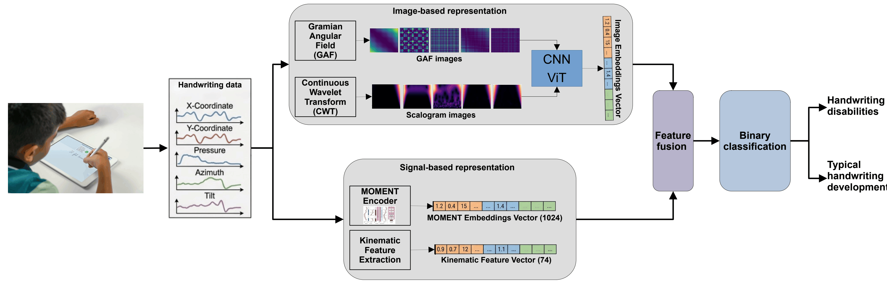
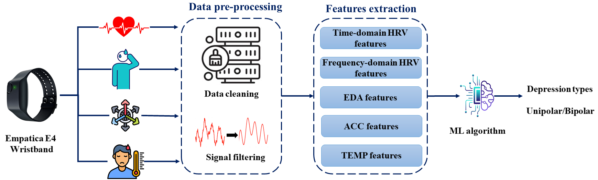
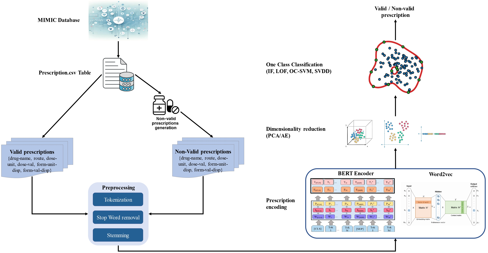
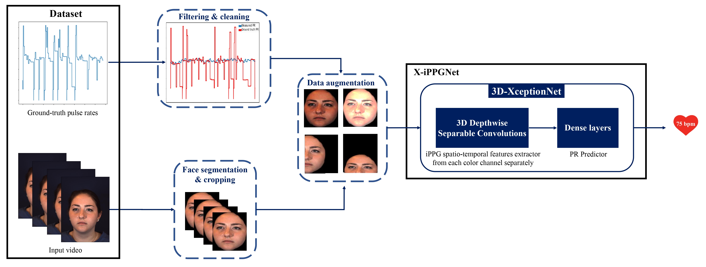
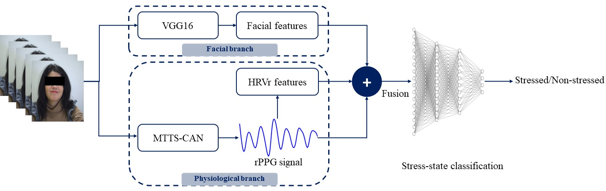
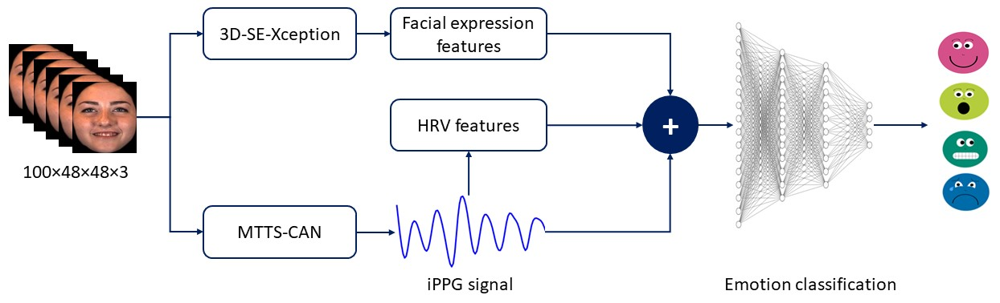
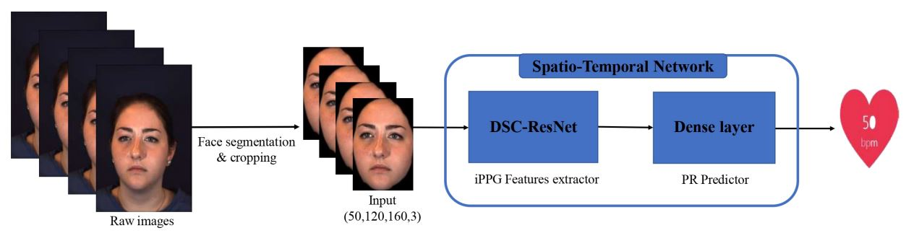
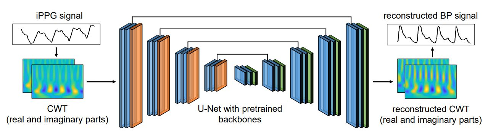
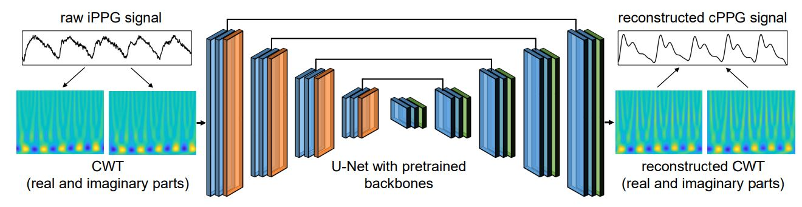